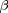

Contents
%{ %% Supervised learning using pmtk3 % _This page was auto-generated by publishing_ % <http://pmtk3.googlecode.com/svn/trunk/docs/tutorial/tutSupervised.m>. % % We provide a description of the main models and algorithms supported by % pmtk for solving supervised learning problems (i.e., univariate % conditional density estimation). We do not yet support % multivariate conditional density estimation (structured output % classification), a;though this will be added at a later date. % % %% Models % The following is a list of pmtk models that are designed for % supervised learning (in alphabetical order). % We have classified the models based on whether they can be used for % classification, regression or both; whether they are generative models of % the form $p(y,x|\theta)$ or discriminative models of the form $p(y|x,\theta)$; % and whether they are parametric (so $\theta$ has fixed size) or % non-parametric (so $\theta$ grows as the training set gets larger). % Note that, in the classification setting, we assume $y \in \{1,...C\}$, % where C is a relatively small number of classes. % %% % <html> % <table border=1> % <TR ALIGN=left> % <td> Model % <td> Description % <td> Classif/regr % <td> Gen/Discr % <td> Param/non % <tr> % <td> discrimAnalysis % <td> Discriminant analysis (linear, quadratic, regularized, shrunken) % <td> Classif % <td> Gen % <td> Param % <tr> % <td> knn % <td> k nearest neighbors % <td> Classif % <td> Gen % <td> Nonparam % <tr> % <td> linreg % <td> Linear regression % <td> Regr % <td> Discrim % <td> Param % <tr> % <td> logreg % <td> Logistic regression % <td> Classif % <td> Discrim % <td> Param % <tr> % <td> mlpClassif % <td> multi-layer perceptron (aka feedforward neural network) % <td> Classif % <td> Discrim % <td> Param % <tr> % <td> mlpRegress % <td> multi-layer perceptron (aka feedforward neural network) % <td> Regr % <td> Discrim % <td> Param % <tr> % <td> naiveBayes % <td> Naive Bayes classifier % <td> Classif % <td> Gen % <td> Param % <tr> % <td> rvm % <td> Relevance vector machine % <td> Both % <td> Discrim % <td> Nonparam % <tr> % <td> svm % <td> Support vector machine % <td> Both % <td> Discrim % <td> Nonparam % </table> % </html> %% % More models may be added in the future. % % %% Creating a model % To create a model of type 'foo', use one of the following %% % model = fooCreate(...) % manually specify parameters % model = fooFit(X, y, ...) % Compute ML or MAP estimate of params % model = fooFitBayes(X, y, ...) % Compute posterior of params %% % where % % * '...' refers to optional arguments (see below) % * X is an N*D design matrix containing the training data, % where N is the number of training cases and D is the number of features. % * y is an N*1 response vector, which can be real-valued (regression), % 0/1 or -1/+1 (binary classification), or 1:C (multi-class). % % If X contains missing values, represented as NaNs, % it is best to use a generative model (although not all % models currently support this functionality). % NaNs in y correspond to semi-supervised learning, which % is not yet supported. % % The resulting model is a Matlab structure; % However, we will sometimes call it an 'object', % since it behaves like one in many respects. % % In the case of |fooCreate| and |fooFit|, the parameters are point estimates. % In the case of |fooFitBayes|, the parameters are represented as % distributions, which may be represented parameterically % or as a bag of samples. The details will be explained below % when we look at specific model classes. % %% Fitting a linear regression model by maximum likelihood % As an example, we can fit a linear regression model to the caterpillar % data set using maximum likelihood estimation % as follows (extracted from linregBayesCaterpillar.m): %% clear all X = loadData('caterpillar'); % from http://www.ceremade.dauphine.fr/~xian/BCS/caterpillar y = log(X(:,11)); % log number of nests X = X(:,1:10); [model] = linregFit(X, y) %% % Let us check that this matches the usual equation for the MLE % (adding a column of 1s to deal with the offset term) %% X1 = [ones(size(X,1),1) X]; wOLS = X1\y; assert(approxeq(model.w, wOLS)) %% %% Bayesian parameter inference % If you fit by the model by MLE, you can examine the % value of the estimated parameters by typing |model.params|, % where params is the name of the parameter (here w or sigma2). % But what if we want to know how much confidence % we should have in these estimates? % For this, we should use Bayesin inference. % We can compute the posterior distribution of the % parameters given the data and an uninformative prior % as follows: %% [modelB, logev, postSummary] = linregFitBayes(X, y, 'prior', 'uninf'); %% % Here |modelB| is the model which contains % the posterior of the parameters: %% modelB %% % There is no longer a field called |w| or |sigma2| % since we are not using point estimation. % Instead, modelB contains the parameters % of the posterior, % which has the following form %% % $$p(w,\sigma^2|D) = N(w|w_N, V_N) IG(\sigma^2|a_N,b_N)$$ %% % Since we used an uninformative prior, % the posterior mean is the same as the MLE %% assert(approxeq(wOLS, modelB.wN)) %% % % logev is the log evidence, or marginal likelihood, % and is a measure of 'goodness of fit' of the overall model: %% % $$p(D) = \int \int p(D|w,\sigma^2) p(w,\sigma^2) d w d \sigma^2 $$ %% % This can only be computed if we use a proper prior, % not an uninformative prior. % Hence in this case |logev=[]|. %% % |postSummary| is a summary of the posterior. % It contains the % the posterior mean, standard deviation and 95% credible interval % of each regression parameters. % It also determines if each % coefficient is significantly different from 0, % based on whether its 95% CI excludes 0. %% postSummary %% % We can print the posterior summary as a table using the command % below. We put % a little * next to the significant coefficients. %% [modelB, logev, postSummary] = linregFitBayes(X, y, 'prior', 'uninf', ... 'displaySummary', true); %% % We see that coefficients 0, 1, 2, 4, 5 are "significant" % by this measure. (Other methods of testing significance, based on Bayes factors, can also be % used, but are a bit more complicated, and one cannot use uninformative % priors when using Bayes factors.) % % Note that pmtk currenlty has rather limited support for Bayesian % model fitting, and not all Bayesian model fitting procedures currently implement % this posterior summary feature. %% Frequentist parameter inference % It turns out that in this particular example, the Bayesian analysis is % identical to a classical frequentist analysis (because the posterior % for linear regression under an uninformative Jeffreys prior is equivalent % to the sampling distribution of the MLE). To see this, let us use the % <http://www.mathworks.com/products/statistics/ stats toolbox> to fit the model and perform a frequentist analysis: %% X1 = [ones(size(X,1),1), X]; [b, bint] = regress(y, X1); % b(j) is coefficient j, bint(j,:) = lower and upper 95% conf interval assert(approxeq(b, postSummary.what)) assert(approxeq(bint, postSummary.credint)) for i=1:length(b) fprintf('%8.3f, [%8.3f, %8.3f]\n', b(i), bint(i,1), bint(i,2)); end fprintf('\n'); %% % We see that the MLE is the same as the posterior mean, % and the 95% frequentist confidence interval is the same as the 95% % Bayesian credible interval. % % % In general, a Bayesian and frequentist analysis may not give the same % results. In pmtk, all inference is Bayesian. % However, pmtk supports some non-Bayesian estimation methods, % such as cross validation, as we will see below. %% Using a model for prediction % In machine learning, we usually care more about prediction than in trying % to interpret the fitted parameters (especially since many models of % interest are hard to interpret or even strictly unidentifiable). % % Once the model has been created, you can use it to make predictions % as follows % %% % [yhat, py] = fooPredict(model, Xtest) % plugin approximation % [yhat, py] = fooPredictBayes(model, Xtest) % posterior predictive %% % Here Xtest is an Ntest*D matrix of test inputs, % and yhat is an Ntest*1 vector of predicted responses of the same type % as ytrain. % For regression this is the predicted mean, for classification this is the % predicted mode (most probable class label). % The meaning of py depends on the model, as follows: % % * For regression, py is an Ntest*1 vector of predicted variances. % * For binary classification, py is an Ntest*1 vector of the probability of being in class 1. % * For multi-class, py is an Ntest*C matrix, where py(i,c) = p(y=c|Xtest(i,:),params) % % The difference between |predict| and |predictBayes| is as follows. % |predict| computes $p(y|x,\hat{\theta})$, which "plugs in" a point estimate % of the parameters, while |predictBayes| computes %% % $$p(y|x,D) = \int p(y|x,\theta) p(\theta|D) d\theta$ %% % This is called the (posterior) predictive density. % In practice, the Bayesian approach results in similar (often identical) % values for yhat, but quite different values for py. In particular, the % uncertainty is reflected more accurately in the Bayesian approach, as we % illustrate below. %% Prediction with linear regression % % As an example, consider fitting a linear regression model to some 1d data % using MLE and Bayesian methods (using |linregPostPredLinearDemo|), % and then plotting the predictions on a test set (which is just a grid of % points in the interval [-7,7]) %% setSeed(1); [xtrain, ytrain, xtest] = polyDataMake('sampling', 'sparse', 'deg', 2); fitMethods = {@(x,y) linregFit(x,y), @(x,y) linregFitBayes(x,y)}; predictMethods = {@(x,y) linregPredict(x,y), @(x,y) linregPredictBayes(x,y)}; names = {'MLE', 'Bayes'}; for i=1:length(fitMethods) model = fitMethods{i}(xtrain, ytrain); [mu, v] = predictMethods{i}(model, xtest); figure; hold on plot(xtest, mu, 'k-', 'linewidth', 3, 'displayname', 'prediction'); plot(xtrain,ytrain,'ro','markersize', 14, 'linewidth', 3, ... 'displayname', 'training data'); NN = length(xtest); ndx = 1:5:NN; % plot subset of errorbars to reduce clutter sigma = sqrt(v); legend('location', 'northwest'); errorbar(xtest(ndx), mu(ndx), sigma(ndx)); title(names{i}); end %% % The predicted means (black lines) are the same, but in the plugin case, the predicted % variance is constant, whereas in the Bayesian case, the predicted % variance increases as we move further away from the training data, as it % should, since our uncertainty increases as we extrapolate further. % %% Prediction with logistic regression % As another example of this, consider fitting a binary logistic regression % model to some SAT scores, where the response is whether the student % passed or failed the class. First we compute the MLE and use a plugin % approximation for prediction, as is standard practice (from |logregSATdemo|) % %% close all; clear all stat = loadData('sat'); y = stat(:,1); X = stat(:,4); model = logregFit(X, y); [yhat, prob] = logregPredict(model, X); %ok figure; plot(X, y, 'ko', 'linewidth', 2, 'MarkerSize', 7, 'markerfacecolor', 'k'); hold on plot(X, prob, 'ro', 'linewidth', 2,'MarkerSize', 10) %% % We see that the probability of passing the class smoothly increases as % the SAT score goes up. % Now let us fit the model using Bayesian inference with an noninformative % Gaussian prior. By default, the fitting procedure uses a Laplace % approximation to the posterior. To approximate the predictive density, we % can plugin in the posterior mean: %% % $$p(y=1|x,D) = \int \sigma(w^T * x) N(w|\mu,\Sigma) dw % \approx \sigma(w^T \mu)$$ %% % However, this gives essentially the same result as plugging in the MLE. % To get a measure of confidence in this prediction, we can sample values % of w from their posterior (which we have approximated by a Gaussian), use each such sample to make a % prediction, and then compute empirical quantiles of this distribution to % get a 95% credible interval. % This is done using |logregPredictBayes| and gives the results shown below % (from |logregSATdemoBayes|) %% model = logregFitBayes(X, y); [yhat, prob, pCI] = logregPredictBayes(model, X); figure; plot(X, y, 'ko', 'linewidth', 2, 'MarkerSize', 7, 'markerfacecolor', 'k'); hold on plot(X, prob, 'ro', 'linewidth', 2,'MarkerSize', 10) for i=1:size(X,1) line([X(i,1) X(i,1)], [pCI(i,1) pCI(i,2)]); end %% % % Not all models support Bayesian fitting or prediction (the list will hopefully grow % over time, as people add new methods). % However, all models provide some measure of confidence on their outputs. % %% Visualizing the decision boundaires % When comparing classification methods, it is useful to apply them to 2d % datasets and to plot the regions of space that get mapped to each class; % these are called decision regions, and the boundaries between them are called decision % boundaries. We can do this using the |plotDecisionBoundary(X, y, predFn)| % function, where predFn(X) takes a test matrix and computes the MAP % estimate of the labels for each row. % As an example of this, consider the famous XOR dataset. % Let us try fitting a logistic regression model to it in the original % feature space (from |logregXorLinearDemo|) %% close all; clear all; [X, y] = createXORdata(); model = logregFit(X, y); plotDecisionBoundary(X, y, @(X)logregPredict(model, X)); yhat = logregPredict(model, X); errorRate = mean(yhat ~= y) %% % We see that the method performs at chance level, because the data is not % linearly separable. We give a simple fix to this problem below, when we % discuss basis function expansion. %% Preprocessing, basis function expansion and kernels % We are free to preprocess the data in any way we choose before fitting the model. % In pmtk, you can create a preprocessor (pp) 'object', and then pass it to the fitting function; % the pp will be applied to the training data before fitting the model, and will be applied again to the test data. % The advantage of this approach is that the pp is stored inside the model, % which reduces the chance of applying inconsistent transformations to % training and test data. % % One common form of preprocessing is basis function expansion. % This replaces the original features with a larger set, thus providing an easy way to fit nonlinear models. % A popular approach is to define the new feature vector as follows: %% % $$\phi(x) = (K(x,\mu_1), ..., K(x,mu_D))$$ %% % where the $\mu_j$ are 'prototypes' % and K(x,\mu) is a 'kernel function', which in this context just means a function of two arguments. % A common example is the Gaussian or RBF kernel %% % $$K(x,\mu) = \exp(-\frac{||x-\mu||^2}{2\sigma^2})$$ %% % where $\sigma$ is the 'bandwidth'. (The quantity $1/\sigma$ is known as % the scale or precision.) % Another common example is the polynomial kernel %% % $$K(x,\mu) = (1+x^T \mu)^d$$ %% % where d is the degree. % Often we take the prototypes $\mu_j$ to be the training vectors (rows of $X$), but we don't have to. % % Below we show an example where we fit the XOR data using kernelized % logistic regression, with various kernels and prototypes % (from |logregXorDemo|). %% clear all; close all [X, y] = createXORdata(); rbfScale = 1; polydeg = 2; protoTypes = [1 1; 1 5; 5 1; 5 5]; protoTypesStnd = standardizeCols(protoTypes); kernels = {@(X1, X2)kernelRbfSigma(X1, protoTypesStnd, rbfScale) @(X1, X2)kernelRbfSigma(X1, X2, rbfScale) @(X1, X2)kernelPoly(X1, X2, polydeg)}; titles = {'rbf', 'rbf prototypes', 'poly'}; for i=1:numel(kernels) preproc = preprocessorCreate('kernelFn', kernels{i}, 'standardizeX', true, 'addOnes', true); model = logregFit(X, y, 'preproc', preproc); yhat = logregPredict(model, X); errorRate = mean(yhat ~= y); fprintf('Error rate using %s features: %2.f%%\n', titles{i}, 100*errorRate); predictFcn = @(Xtest)logregPredict(model, Xtest); plotDecisionBoundary(X, y, predictFcn); if i==2 hold on; plot(protoTypes(:, 1), protoTypes(:, 2), '*k', 'linewidth', 2, 'markersize', 10) end title(titles{i}); end %% % In the first example, we use an RBF kernel with centers at 4 % manually chosen points, shown with black stars. % In the second and third examples, we use an RBF and polynomial kernel, % centered at all the training data. This only leaves the kernel parameters % ($\sigma$ and $d$) to be specified. % Below we discuss how to choose the kernel parameters automatically. % %}
Overfitting, regularization and MAP estimation
Using maximum likelihood to train a model often results in overfitting. This means that the model fits the training set well, but is overly complex and consequently performs poorly on test data. This is easiest to illustrate in the context of polynomial regression in 1d, as shown below (based on linregPolyVsRegDemo)
close all; clear all; setSeed(0); n=21; [xtrain, ytrain, xtest, ytestNoisefree, ytest, sigma2] =... polyDataMake('sampling','thibaux','n',n); deg = 14; ytrain = centerCols(ytrain); ytest = centerCols(ytest); pp = preprocessorCreate('poly', deg, 'rescaleX', true, 'standardizeX', false, 'addOnes', false); [pp, Xtrain] = preprocessorApplyToTrain(pp, xtrain); [Xtest] = preprocessorApplyToTest(pp, xtest); pp = preprocessorCreate( 'standardizeX', false, 'addOnes', false); % Fit model by MLE and plot model = linregFit(Xtrain, ytrain, 'preproc', pp); [ypredTest] = linregPredict(model, Xtest); figure; scatter(xtrain, ytrain,'b','filled'); hold on; plot(xtest, ypredTest, 'k', 'linewidth', 3);

We see that the fitted function is very 'wiggly', and fits the noise. This is common when we have very little data compared to the number of parameters (in this example, we have N=21 data points, and 15 parameters, since we fit a degree 14 polynomial).
Using Bayesian inference with an uninformative prior does not help. What we need is an informative prior, that encodes our preference for simpler models. A popular away to achieve this is to use a zero-mean spherical Gaussian prior of the form  , where
, where  is the precision (strength) of the prior. This says that, a priori, we expect the regression weights to be small, which means we believe the function is simple/ smooth (not "too wiggly"). We can compute the posterior of w with this prior using a variety of different models/ likelihood functions. But a computationally simpler approach is to use MAP estimation (aka regularization), which just computes the posterior mode, which is given by
is the precision (strength) of the prior. This says that, a priori, we expect the regression weights to be small, which means we believe the function is simple/ smooth (not "too wiggly"). We can compute the posterior of w with this prior using a variety of different models/ likelihood functions. But a computationally simpler approach is to use MAP estimation (aka regularization), which just computes the posterior mode, which is given by

In the case of a Gaussian likelihood (linear regression) and Gaussian prior, we get

where  is the precision of the measurement noise. If we define
is the precision of the measurement noise. If we define  to be the amount of regularization, we can rewrite this as follows:
to be the amount of regularization, we can rewrite this as follows:

We see that this is a least squares problem with an L2 penalty on the weight vector (this is known as ridge regression). If  is too small, the model will overfit (since the function is too wiggly), but if it is too big, the model will underfit (since the function is too smooth). This is illustrated below, where we examine the mean squared error on the training and test sets as a function of . This illustrates the characteristic U-shape on the test set.
is too small, the model will overfit (since the function is too wiggly), but if it is too big, the model will underfit (since the function is too smooth). This is illustrated below, where we examine the mean squared error on the training and test sets as a function of . This illustrates the characteristic U-shape on the test set.
lambdas = logspace(-10,1.3,10); NL = length(lambdas); printNdx = round(linspace(2, NL-1, 3)); testMse = zeros(1,NL); trainMse = zeros(1,NL); for k=1:NL lambda = lambdas(k); [model] = linregFit(Xtrain, ytrain, 'lambda', lambda, 'preproc', pp); [ypredTest, s2] = linregPredict(model, Xtest); ypredTrain = linregPredict(model, Xtrain); testMse(k) = mean((ypredTest - ytest).^2); trainMse(k) = mean((ypredTrain - ytrain).^2); end hlam=figure; hold on ndx = log(lambdas); % 1:length(lambdas); plot(ndx, trainMse, 'bs:', 'linewidth', 2, 'markersize', 12); plot(ndx, testMse, 'rx-', 'linewidth', 2, 'markersize', 12); legend('train mse', 'test mse', 'location', 'northwest') xlabel('log lambda') title('mean squared error')

Below we print the fitted function for certain chosen lambdas
for k=printNdx lambda = lambdas(k); [model] = linregFit(Xtrain, ytrain, 'lambda', lambda, 'preproc', pp); [ypredTest, s2] = linregPredict(model, Xtest); ypredTrain = linregPredict(model, Xtrain); sig = sqrt(s2); figure; scatter(xtrain, ytrain,'b','filled'); hold on; plot(xtest, ypredTest, 'k', 'linewidth', 3); plot(xtest, ypredTest + sig, 'b:'); plot(xtest, ypredTest - sig, 'b:'); title(sprintf('ln lambda %5.3f', log(lambda))) end


Cross validation for ridge regression
One simple way to choose regularization parameters is cross validation. Below we show how to estimate the expected loss for a ridge regression model as we vary the regularizer.
for k=1:NL lambda = lambdas(k); fitFn = @(Xtr,ytr) linregFit(Xtr, ytr, 'lambda', lambda, 'preproc', pp); predFn = @(mod, Xte) linregPredict(mod, Xte); lossFn = @(yhat, yte) mean((yhat - yte).^2); N = size(Xtrain, 1); %nfolds = N; % LOOCV nfolds = 5; % since the data is sorted left to right, we must randomize the order [mu(k), se(k)] = cvEstimate(fitFn, predFn, lossFn, Xtrain, ytrain, nfolds, ... 'randomizeOrder', true); end
We can plot the results as shown below. We see that it exhibits a U-shape similar to the test error. The vertical line denotes the best value.
figure; hold on ndx = log(lambdas); % 1:length(lambdas); xlabel('log lambda') ylabel('mse') errorbar(ndx, mu, se, 'ko-','linewidth', 2, 'markersize', 12 ); title(sprintf('%d-fold cross validation, ntrain = %d', nfolds, N)) set(gca,'yscale','log') % draw vertical line at best value dof = 1./(eps+lambdas); idx_opt = argmin(mu); verticalLine(ndx(idx_opt), 'color','b', 'linewidth',2);

Bayesian evidence procedure for ridge regression
An alternative to cross validation is to to compute log evidence for each value of alpha, as shown below. (To simplify things, we use the known noise variance) When we plot the log evidence vs alpha, it exhibits the same (inverted) U shape as the test error.
beta = 1/sigma2; alphas = beta * lambdas; for k=1:NL lambda = lambdas(k); [model, logev(k)] = linregFitBayes(Xtrain, ytrain, 'preproc', pp, ... 'prior', 'gauss', 'alpha', alphas(k), 'beta', beta); ypredTest = linregPredictBayes(model, Xtest); ypredTrain = linregPredictBayes(model, Xtrain); testMseB(k) = mean((ypredTest - ytest).^2); trainMseB(k) = mean((ypredTrain - ytrain).^2); end % Sanity check - Bayes with fixed sigma should be same as ridge assert(approxeq(testMseB, testMse)) assert(approxeq(trainMseB, trainMse)) % Now we plot the log evidence vs alpha. figLogev = figure; plot(log(alphas), logev, 'ko-', 'linewidth', 2, 'markersize', 12); xlabel('log alpha') title('log evidence')

Empirical Bayes for ridge regression
The main benefit of the Bayesian approach is that we can use numerical optimization to pick the regularizer, rather than performing a discrete search over a finite grid of values. This is illustrated below.
[modelEB, logevEB] = linregFitBayes(Xtrain, ytrain, 'preproc', pp, 'prior', 'eb'); alphaEB = modelEB.netlab.alpha; figure(figLogev); verticalLine(log(alphaEB), 'linewidth', 3, 'color', 'r');

Variational Bayes for ridge regression
An alternative to EB is to use variational Bayes to infer the posterior over and . This is illustrated below.
[modelVB, logevVB] = linregFitBayes(Xtrain, ytrain, 'preproc', pp, 'prior', 'vb'); alphaVB = modelVB.expectAlpha; figure(figLogev); verticalLine(log(alphaVB), 'linewidth', 3, 'color', 'b');

Discriminant analysis
For generative models such as naive Bayes and discriminant analysis, Gaussian priors (corresponding to L2 regularization) are not appropriate (since the parameters do not live in  ). However, analogous regularization techniques can be devised (and are strongly recommended).
). However, analogous regularization techniques can be devised (and are strongly recommended).
For example, when fitting a discriminant analysis model we will encounter numerical problems when estimating  when N < D, even if we use a tied covariance matrix (i.e., one shared across classes, a metho known as linear discriminant analysis). A simple solution is to use a Wishart prior to compute a MAP estimate of . This is called regularized discriminant analysis, and can be fit using discrimAnalysisFit(X, y, 'rda', lambda), where lambda controls the amount of regularization. See cancerHighDimClassifDemo.m for an example. (We don't run this demo here since it is a bit slow.)
when N < D, even if we use a tied covariance matrix (i.e., one shared across classes, a metho known as linear discriminant analysis). A simple solution is to use a Wishart prior to compute a MAP estimate of . This is called regularized discriminant analysis, and can be fit using discrimAnalysisFit(X, y, 'rda', lambda), where lambda controls the amount of regularization. See cancerHighDimClassifDemo.m for an example. (We don't run this demo here since it is a bit slow.)
Another example is discriminant analysis with a shared diagonal covariance (a special case of naive Bayes). In this case, there are O(D) parameters for the covariance, but O(C D) for the mean. To prevent overfitting, we can shrink the class-conditional means towards the overall mean; this technique is called nearest shrunken centroids. We can fit this model using discrimAnalysisFit(X, y, 'shrunkenCentroids', lambda). We given an example of this below (from shrunkenCentroidsSRBCTdemo.m), where we apply the method to the SRBCT gene microarray dataset, which has N=144 training examples, D=16063 features and C=4 classes.
close all; clear all; loadData('srbct'); Xtest = Xtest(~isnan(ytest), :); ytest = ytest(~isnan(ytest)); fitFn = @(X,y,lam) discrimAnalysisFit(X, y, 'shrunkenCentroids', lam); predictFn = @(model, X) discrimAnalysisPredict(model, X); lambdas = linspace(0, 8, 20); nTrain = length(ytrain); nTest = length(ytest); for i=1:length(lambdas) model = fitFn(Xtrain, ytrain, lambdas(i)); yhatTrain = predictFn(model, Xtrain); yhatTest = predictFn(model, Xtest); errTrain(i) = sum(zeroOneLossFn(yhatTrain, ytrain))/nTrain; errTest(i) = sum(zeroOneLossFn(yhatTest, ytest))/nTest; numgenes(i) = sum(model.shrunkenCentroids(:) ~= 0); end figure; plot(lambdas, errTrain, 'gx-', lambdas, errTest, 'bo--',... 'MarkerSize', 10, 'linewidth', 2) legend('Training', 'Test', 'Location', 'northwest'); xlabel('Amount of shrinkage') ylabel('misclassification rate') title('SRBCT data')
Warning: The argument for the %s format specifier must be of type char (a string).
Warning: Option '' not used.
ans =
0
Error using ==> minus
Matrix dimensions must agree.
Error in ==> softThreshold at 3
out = sign(x) .* max(abs(x) - delta, 0);
Error in ==> discrimAnalysisFit>shrunkenCentroidsFit at 148
offset(c,:) = softThreshold(offset(c,:), lambda);
Error in ==> discrimAnalysisFit at 59
model = shrunkenCentroidsFit(model, X, y, lambda);
Error in ==> @(X,y,lam)discrimAnalysisFit(X,y,'shrunkenCentroids',lam)
Error in ==> tutSupervised at 699
model = fitFn(Xtrain, ytrain, lambdas(i));